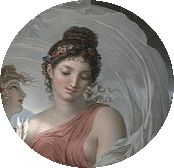

Musas dedicadas a enseñar
Maestras
Caliope |

Clio |

Erato |

Euterpe |

Melponeme |
Polimnia |
Talia |

Terpsicore |
Urania |
CALIOPE
|
MAESTRA DE LITERATURA
"Musa de la poesía épica y la elocuencia"
Como las demás musas, Calíope es hija de Zeus y Mnemosine, pero Hesíodo
indica su supremacía sobre sus hermanas porque siempre acompaña a los reyes.
Se casó con Eagro y con él fue madre de Orfeo, Yálemo y Lino, si bien
también se dice que el padre de este último fue Apolo.4 También Calíope
—o bien su hermana Euterpe—, con Estrimón, uno de los oceánidas, fue
madre de Reso, un rey tracio que murió en la guerra de Troya. Estrabón
afirma que fue madre con Zeus de los Coribantes.Algunas fuentes le atribuyen.
la maternidad de Himeneo,3 dios de los esponsales y del canto nupcial, si bien
otras afirman que era hijo de Clío o Urania
Edad: 42 años
Años en la institucion: 22 años
Los atributos por los que era conocida son los de una muchacha de aire majestuoso,
con una corona dorada o guirnaldas sobre la cabeza, una trompeta en una mano y un
pergamino en la otra mano. En otras ocasiones, en vez del pergamino lleva una tablilla
o un libro. También es frecuente representarla con sus hijos.
|
CLIO
|
MAESTRA DE HISTORIA
"Musa de la historia y de la poesía épica"
Como las demás musas, Calíope es hija de Zeus y Mnemosine, pero Hesíodo
indica su supremacía sobre sus hermanas porque siempre acompaña a los reyes.
Se casó con Eagro y con él fue madre de Orfeo, Yálemo y Lino, si bien
también se dice que el padre de este último fue Apolo.4 También Calíope
—o bien su hermana Euterpe—, con Estrimón, uno de los oceánidas, fue
madre de Reso, un rey tracio que murió en la guerra de Troya. Estrabón
afirma que fue madre con Zeus de los Coribantes.Algunas fuentes le atribuyen.
la maternidad de Himeneo,3 dios de los esponsales y del canto nupcial, si bien
otras afirman que era hijo de Clío o Urania
Edad: 34 años
Años en la institucion: 13 años
Se la suele representar como una muchacha coronada con laureles, llevando una trompeta
en la mano derecha y un libro de Tucídides en la izquierda. A estos atributos se une a veces
el globo terráqueo sobre el que posa y el Tiempo aparece junto a él, para mostrar que la
Historia abarca todos los lugares y todas las épocas. A veces sus estatuas llevan una guitarra
en una mano y un plectro en la otra, pues también se la consideraba inventora de la guitarra. En
otras representaciones mucho más clásicas, se ve a Clío llevando en la mano izquierda un rollo
de papiro; a sus pies, tiene una caja para guardar rollos.
|
ERATO
|
MAESTRA DE POESIA
"Musa de la poesía amoroso"
Desde el Renacimiento, se la representa coronada con mirto y rosas, llevando
una pequeña lira o una cítara entre sus manos, instrumento de cuerda que Hermes
inventó. En otras iconografías se la representa llevando una flecha de oro,
como reminiscencia del ‘eros’, ese sentimiento que ella inspira. A sus pies,
generalmente hay dos tórtolas picoteando y, a veces, a su lado la acompaña
el amor alado (el dios Eros) provisto de un arco, flechas, carcaj y, algunas
veces, de una antorcha encendida.
Edad: 22 años
Años en la institucion: 3 años
|
EUTERPE
MELPOMENE
|
MAESTRA DE CANTO
"Musa de la melodia"
Melpómene es hija de Zeus y Mnemósine. Asociada a Dioniso, inspira la tragedia,
se la representa ricamente vestida, grave el continente y severa la mirada, generalmente
lleva en la mano una máscara trágica como su principal atributo, en otras ocasiones empuña
un cetro o una corona de pámpanos, o bien un puñal ensangrentado. Va coronada con una diadema
y está calzada de coturnos. También se la representa apoyada sobre una maza para indicar que la
tragedia es un arte muy difícil que exige un genio privilegiado y una imaginación vigorosa.
En algunas leyendas Melpómene aparece como madre de las sirenas, cuyo padre sería Aqueloo o Forcis,
el padre de las Gorgonas. En una de sus manos sostiene un cetro y una corona, en la otra, un puñal.
Se halla rodeada de fortalezas, armas y laureles y a su arrogancia se une la tristeza de la soledad.
Un mito dice que Melpómene tenía todas las riquezas que podía tener una mujer, la belleza, el dinero,
los hombres, solo que teniéndolo todo no podía ser feliz, es lo que lleva al verdadero drama de la vida,
tener todo no es suficiente para ser feliz
Edad: 28 años
Años en la institucion: 2 años
|
POLMNIA
|
MAESTRA DE PARTITURA
"Musade los cantos sagrados y de la elocuencia"
Musa de los cantos sagrados, la retórica y la pantomima, inclinada ligeramente
hacia delante, mientras apoya el codo derecho en un pedestal rocoso y la barbilla
en su mano derecha. Cabello recogido en la parte posterior y tocado con diadema.
Va ataviada con túnica y manto largos que caen formando finos pliegues.
En este sentido, podría decirse que para todo escultor neoclásico la mitología fue
un tema obligatorio y, de hecho, tuvo un extraordinario auge en la segunda mitad del
siglo XVIII, manteniéndose durante el siglo XIX en detrimento de la temática religiosa.
El motivo debe buscarse en el ideal de belleza presente en los mitos, así como en los
valores que encierran, tales como los de carácter educativo y ético, tan considerados en
la época.
|
TALIA
TERPSICORE
URANIA